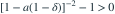

从  取一个样本
取一个样本  。在覆盖率为
。在覆盖率为  的区间
的区间 ![[aX,bX]](../practice/math/2d73fe23dd711ac56cb7.svg) （
（ ）中，哪组系数使期望长度最小？
）中，哪组系数使期望长度最小？
取一个样本 。在覆盖率为 的区间 （）中，哪组系数使期望长度最小？- A
- B
- C
- D
我已思考，展开答案与解析
正确答案：D
- 覆盖率约束为 ，故 。
- 在可行域 上， 的导数为

，所以最优为 。
易错提醒最短是针对题设的乘法区间类，不能扩展成任意区间的普遍结论。
JYSG · 432精选 · 册内清华大学432·2025年·4(3)；PDF第117页（印刷页115）
原大题拆解